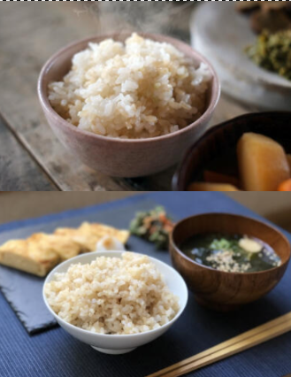
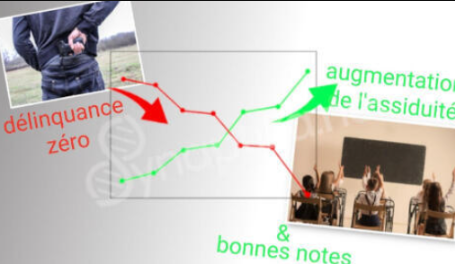

Et si la solution à la délinquance scolaire, aux troubles du comportement et aux faibles performances académiques se trouvait... dans nos assiettes ?
Une histoire extraordinaire venue du Japon nous prouve que ce n'est pas une utopie, mais une réalité documentée : quand on a changé la nourriture à la cantine, la délinquance est descendue à zéro !
Découvrez comment Mitsugu Otsuka, directeur visionnaire et expert en éducation alimentaire, a transformé une école problématique en un modèle d'excellence grâce à une simple mais puissante réforme nutritionnelle.
🔍 Un établissement en crise : le diagnostic alarmant
En 1992, Mitsugu Otsuka est nommé directeur d'un établissement scolaire à Nagano accueillant près de 1 200 élèves.
Le tableau qu'il découvre est catastrophique :
- Élèves indisciplinés et réfractaires à l'éducation
- Harcèlement scolaire généralisé
- Comportements délinquants quotidiens
- Environ 50 élèves en décrochage scolaire complet
- Des bandes traversant les couloirs à moto (!)
- Vitres brisées et mégots de cigarettes éparpillés dans l'établissement
Face à cette situation que beaucoup jugeraient désespérée, Otsuka aurait pu opter pour des mesures disciplinaires strictes ou un renforcement de la sécurité. Mais son approche fut radicalement différente.
🔎 L'enquête nutritionnelle : une découverte stupéfiante
Plutôt que de se focaliser uniquement sur les symptômes, Otsuka décide d'analyser en profondeur les habitudes alimentaires de ses élèves.
Ce qu'il découvre est édifiant :
- 38% des élèves ne prenaient pas de petit-déjeuner — et ces mêmes élèves étaient systématiquement impliqués dans des comportements délinquants et intimidants
- Même parmi ceux qui prenaient un petit-déjeuner, le menu était principalement composé de sandwichs au jambon, saucisses, jus avec conservateurs artificiels, colorants et édulcorants synthétiques, et produits instantanés ultra-transformés
"Ce type de régime alimentaire n'était pas suffisant, car il affaiblit le corps, en particulier les vaisseaux sanguins, en provoquant des problèmes de calcium et de magnésium, ce qui épaissit le sang." — Mitsugu Otsuka
🌱 La réforme alimentaire : simple mais révolutionnaire

En 1993, Otsuka met en place une réforme alimentaire qui suscite immédiatement de vives réactions parmi les parents d'élèves. Certains vont jusqu'à exiger son départ, affirmant que "tout se passe très bien dans cet établissement" et que "personne n'a besoin de ces méthodes".
Malgré cette résistance initiale, il persiste et introduit un nouveau menu à la cantine :
- Base de riz dont 10% de riz brun germé (Genmaï), reconnu pour ses propriétés de purification du sang et d'assouplissement des vaisseaux sanguins
- Poisson frais riche en oméga-3, essentiels au développement cérébral
- Légumes locaux cultivés sans pesticides
- Repas équilibrés servis cinq jours par semaine
🌟 Les résultats : une transformation spectaculaire

Les changements observés furent non seulement rapides, mais aussi profonds et durables.
Première année :
- Disparition des détritus dans l'école
- Diminution significative des incidents disciplinaires
Deuxième année :
- Disparition complète des actes de délinquance et de criminalité
- Réduction de moitié du nombre d'élèves en décrochage scolaire
- Développement spontané d'initiatives positives : les élèves commencent à prendre soin des plantes et à embellir l'établissement
Troisième année et au-delà :
- L'établissement décroche le prix du ministre de l'Éducation lors du concours national des parterres de fleurs
- La bibliothèque devient bondée pendant la pause déjeuner
- Des élèves obtiennent le prix du ministre de l'Éducation lors du concours de rédaction
- Disparition des cas d'atopie sévère, d'allergies et de taux élevés de graisse et de cholestérol
- Lors du test national d'aptitude académique, les scores sont nettement supérieurs à la moyenne nationale
🔬 Ce que nous apprend la science en 2025
L'expérience d'Otsuka, loin d'être un cas isolé, est aujourd'hui corroborée par de nombreuses études scientifiques récentes :
- Performances cognitives : Une étude de 2025 démontre que les enfants consommant une alimentation riche en fruits, légumes et oméga-3 présentent une amélioration significative de leur concentration et de leur mémoire.
- Comportement : Les recherches de l'UNESCO confirment que les repas scolaires équilibrés augmentent non seulement le taux de scolarisation de 9%, mais améliorent aussi l'assiduité de 8%.
- Santé mentale : Des études récentes établissent un lien direct entre une alimentation équilibrée et une réduction des symptômes d'anxiété et de dépression chez les enfants, facteurs souvent liés aux comportements perturbateurs.
- Impact biochimique : Les aliments ultra-transformés riches en sucres raffinés provoquent des pics glycémiques suivis de chutes d'énergie, affectant directement la capacité d'attention et favorisant l'irritabilité.
"Une consommation excessive de sucres ajoutés a été corrélée à des problèmes de comportement et à une baisse des performances académiques." — Revue Africaine de Management Public, 2025
🤔 Un repas peut-il vraiment changer une vie ?
Il est légitime de se demander si un simple repas peut vraiment engendrer de tels changements. L'expérience d'Otsuka et les données scientifiques récentes suggèrent que oui, pour plusieurs raisons :
- L'alimentation influence directement la biochimie cérébrale — Les nutriments que nous consommons sont les matériaux de construction de nos neurotransmetteurs, hormones et cellules cérébrales.
- L'équilibre glycémique affecte le comportement — Les montagnes russes de sucre dans le sang provoquent irritabilité, difficultés de concentration et impulsivité.
- L'inflammation d'origine alimentaire impacte les fonctions cognitives — Les aliments ultra-transformés favorisent l'inflammation, qui perturbe les fonctions cérébrales.
- La nutrition influence le microbiote intestinal — L'axe intestin-cerveau est aujourd'hui reconnu comme un facteur clé dans notre équilibre émotionnel et comportemental.
🌍 Un modèle applicable ailleurs ?
Malgré les preuves accumulées, de nombreux établissements scolaires dans le monde continuent de proposer :
- Des produits importés avec conservateurs et fongicides
- Des aliments à forte teneur en viande et en graisse
- Des produits ultra-transformés qui "ne se dégradent pas même après plusieurs années"
Ces choix alimentaires, dictés souvent par des contraintes budgétaires ou des habitudes culturelles, pourraient contribuer aux problèmes comportementaux et académiques que nous observons dans de nombreuses écoles.
💡 Conclusion : nourrir le corps pour cultiver l'esprit
L'histoire remarquable de Mitsugu Otsuka nous rappelle une vérité fondamentale : une alimentation bien équilibrée nourrit non seulement le corps, mais aussi l'esprit des enfants.
Ce n'est que sur cette base nutritionnelle solide que les enfants peuvent véritablement développer leurs capacités intellectuelles et nourrir leurs rêves et espoirs.
Et si nous commencions par repenser ce que nous mettons dans les assiettes de nos enfants ?
Votre avis nous intéresse :
Pensez-vous que l'alimentation joue un rôle aussi crucial dans le comportement et les performances scolaires des enfants ?
Avez-vous observé des changements similaires après avoir modifié votre alimentation ou celle de vos enfants ?
#ÉducationAlimentaire
#NutritionScolaire
#PédagogieJaponaise
#AlimentationSaine
#PerformancesScolaires
#DéveloppementEnfant
#BienÊtreÉducatif
#RévolutionNutritionnelle
#ÉducationJapon
#SantéMentaleEnfants
Avertissement important :
Les techniques et services qui sont proposés ne sont en aucune façon (directement ou indirectement) un diagnostic ou une prescription pour une quelconque maladie, pour qui que ce soit. Les soins et traitements médicaux ne sont en aucun cas allégés ou stoppés.
Les prestations ne se substituent en aucun cas à des traitements médicaux. Il est possible que le consultant puisse être réorienté vers un médecin spécialiste si nécessaire.